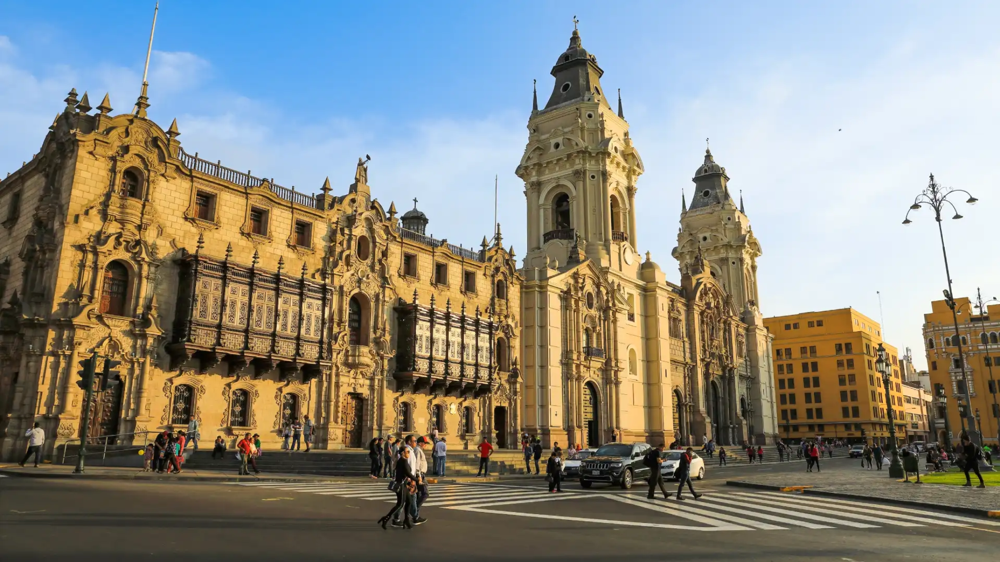
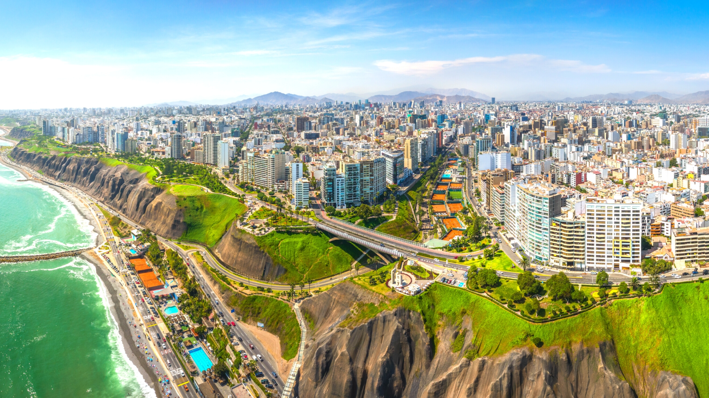
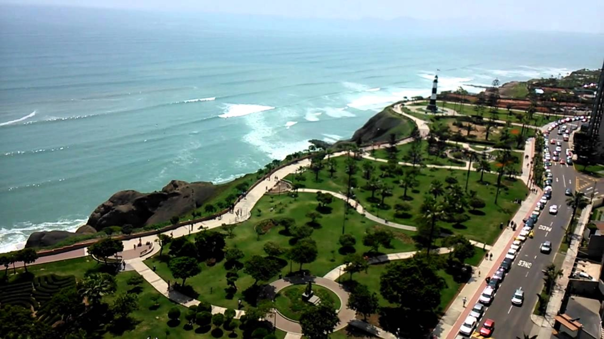
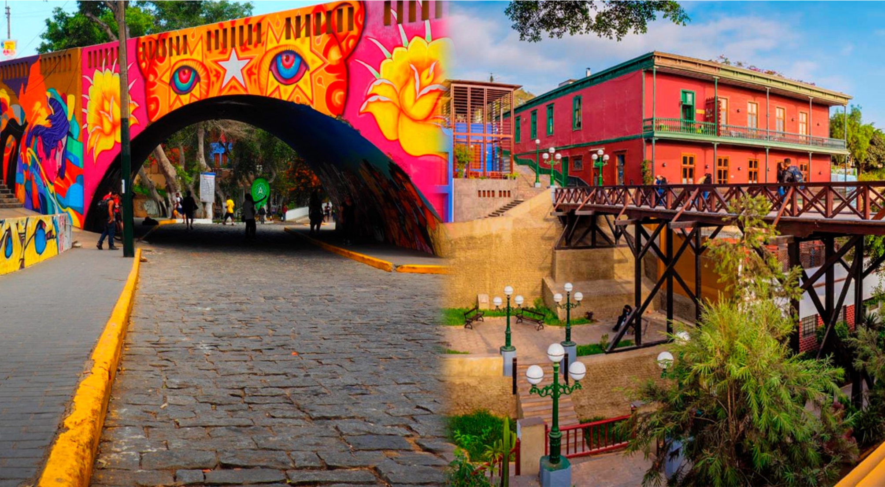

01
Centro Histórico de Lima
Arquitectura colonial declarada Patrimonio de la Humanidad, balcones tallados de madera y las misteriosas Catacumbas del Convento de San Francisco.

La Ciudad de los Reyes
📍 Costa central del Perú · Capital gastronómica de América · Patrimonio UNESCO
Llegada principal por el Aeropuerto Internacional Jorge Chávez (LIM). Conexión directa desde las principales capitales del mundo.
La capital culinaria de América. Clima húmedo todo el año. Se recomienda moverse mediante aplicaciones de transporte por los distritos costeros.

Arquitectura colonial declarada Patrimonio de la Humanidad, balcones tallados de madera y las misteriosas Catacumbas del Convento de San Francisco.

Disfruta la brisa del Pacífico. El malecón es perfecto para bicicleta, parapente y alta gastronomía con vista al mar.

El rincón del arte limeño. Cruza el Puente de los Suspiros, camina entre murales vibrantes y prueba cócteles de pisco en casonas restauradas.